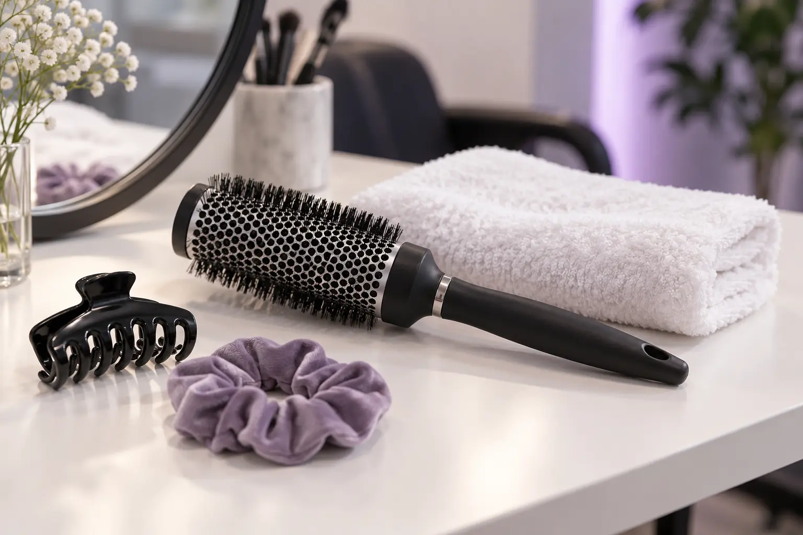

Šukuosenos kaina ir trukmė: ką palyginti prieš vizitą
Autorius: Madbeauty redakcija · Numatyta 2026 m. spalio 21 d. 16:00 (Lietuvos laiku)
Palyginkite šukuosenos pasiūlymus pagal darbų apimtį, plovimą, aksesuarus ir laiką. Pamatykite, kaip sulyginti galutinę kainą, kai pasiūlymai pateikti skirtingai.

Šukuosenos kainą prasminga lyginti tik sulyginus, kokie darbai į ją įtraukti. Plovimas, pasiruošimas, aksesuarų įsegimas ir atvykimas į kitą vietą gali būti įtraukti atskirai arba nepatekti į pasiūlymą. Paprašykite galutinės kainos ir aiškaus darbų sąrašo tai pačiai užduočiai.
Kas įeina į pasiūlytą kainą?
Pradėkite nuo norimo rezultato: palaidų garbanų, pynimo ar susegtos šukuosenos. Jei turite nuotrauką, nurodykite, kurios detalės jums svarbiausios, o kurias galima pritaikyti. Tuomet atskirai sulyginkite plovimą, džiovinimą ar kitą paruošimą, pačią šukuoseną ir aksesuarų įsegimą. Pavadinimai vieni patys neparodo, ar paslaugų apimtis vienoda.
Plaukų ilgį, tankumą ir pageidaujamą sudėtingumą nurodykite abiem teikėjams vienodai. Paklauskite, ar kaina galutinė, ar ji gali keistis įvertinus plaukus ir pasirinktas detales. Aksesuarų atveju išsiaiškinkite, kas juos suteikia ir ar jų pritvirtinimas įskaičiuotas.
Išgalvotas aritmetinis pavyzdys, ne realių teikėjų pasiūlymas: A variantas – šukuosena 50 € ir plovimas 10 €, iš viso 60 €. B variantas – 60 €, plovimas įskaičiuotas. Jei kiti darbai vienodi, abiejų pasiūlymų galutinė suma už šią apimtį yra 60 €.
Datuota dviejų meniu stebėsena (2026-10-07): Makeup Faustina meniu nurodė greitą garbanų formavimą be plovimo – 35 € / 45 min. LOOKS meniu plovimą ir džiovinimą nurodė nuo 50 € / 60 min. Tai skirtingos apimtys, ne tiesioginis palyginimas ar rinkos kainų intervalas.
Kaip palyginti laiką ir pasiruošimą?
Patikrinkite, ar nurodytas laikas apima tik šukuosenos atlikimą, ar ir plovimą bei paruošimą. Jei turite būti pasiruošę konkrečiam renginio laikui, susitarkite, kada darbas bus baigtas, ir pasitikrinkite, ar į planą įtraukti jūsų pasirinkti aksesuarai. Vien meniu nurodytas minučių skaičius nepatvirtina laisvo vizito laiko.
Jei paslauga reikalinga ne teikėjo darbo vietoje, atvykimo galimybę laikykite atskirai patvirtintina sąlyga. Prieš įtraukdami ją į kainos palyginimą, paprašykite patvirtinti, ar konkretus teikėjas vyksta į nurodytą vietą, kokia būtų kelionės bei pasiruošimo vietoje kaina ir kada jis gali atvykti.
Ką nusiųsti, kad pasiūlymus būtų lengviau sulyginti?
Abiem teikėjams pateikite tą pačią trumpą užduotį: norimos šukuosenos aprašymą ar nuotrauką, plaukų ilgį, ar reikės plovimo, informaciją apie aksesuarus ir laiką, iki kada turite būti pasiruošę. Jei svarbus atvykimas į kitą vietą, pridėkite adresą ir paprašykite atskirai patvirtinti šią sąlygą.
Atsakymus palygindami pasižymėkite: kokie darbai įtraukti, ar plovimas ir aksesuarai kainuoja papildomai, kiek laiko numatyta visai sutartai apimčiai ir kokia galutinė suma. Prieš sutikdami su pasiūlymu aiškiai suderinkite kainą bei paslaugos apimtį ir išsaugokite mokėjimo dokumentą – tai nurodoma VVTAT rekomendacijose dėl grožio paslaugų; tai bendro pobūdžio informacija, ne individuali teisinė konsultacija.
Madbeauty kataloge galite atverti nacionalinę šukuosenų kategoriją ir pasirinkti miestą. Katalogo kategorija pati savaime nepatvirtina konkretaus teikėjo, pasiūlymo ar laisvo laiko.
Susiję gidai
Šaltiniai
- VVTAT · grožio paslaugos ir ginčai · VVTAT
- Looks · kirpimas ir dažymas · Teikėjo paslaugų meniu
- Makeup Faustina · makiažas ir šukuosena · Teikėjo paslaugų meniu